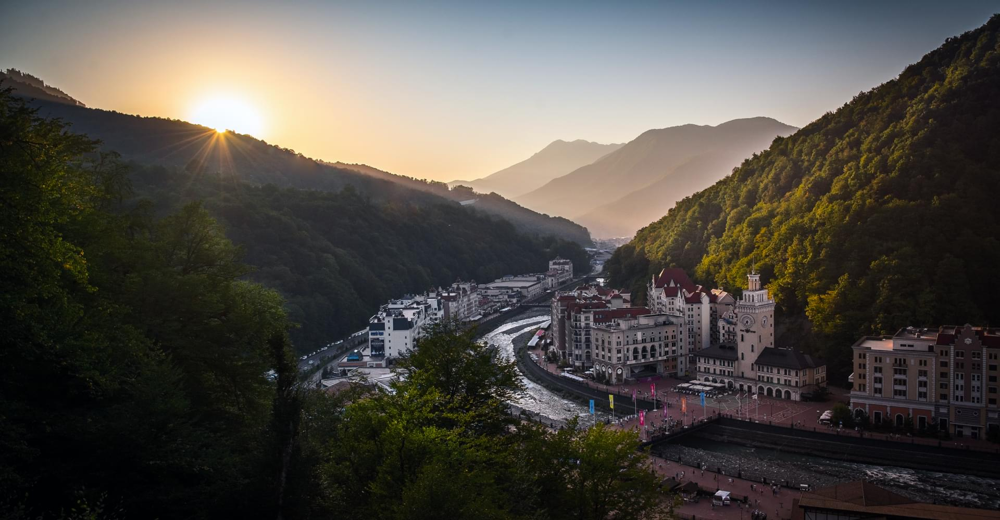

Город Сочи прошел
в своем российском
развитии путь
от небольшого
военного укрепления,
через создание посадского
населенного пункта
до курортной столицы
России и даже столицы
Зимней Олимпиады в 2014 году.
Впервые Сочи встречается в записях турецкого путешественника и государственного деятеля Эвлия Челеби,
побывавшего на Черноморском побережье Кавказа в 1641.
Город Сочи был основан 21 апреля 1838 как форт Александрия. На территории современного Сочи во время
Кавказской войны были также основаны форты Святого Духа (1837), положивший начало будущему району Адлер,
Лазаревский и Головинский (1839), ставшие впоследствии посёлками Лазаревское и Головинка.
15 сентября 1902 было открыто первое ванное здание на Мацесте. 14 июня 1909 открыт первый курорт -
"Кавказская Ривьера", что считается началом Сочи как курорта.
КЛИМАТ
По своим климатическим условиям, Сочи город уникальный. Главный Кавказкий хребет защищает город от холодных
ветров, а Черное море насыщает теплом. Сочинцам знакомы три времени года: поздняя осень здесь сменяется
ранней весной, минуя зиму. Сочи единственный город в России, прогуливаясь по улицам которого можно запросто
встретить пальмы и магнолии, мандарины и лимоны, кипарисы и самшит.
В Сочи очень жарко: средние значения температуры воздуха летом порядка 25-35 градусов, а вода прогревается
до 30.
Зимой стоит теплая погода: 5-10 градусов здесь нередкое явление в это время года. Ясная, безоблачная погода
стоит почти круглый год.
КУДА СХОДИТЬ
Сочи – крупнейший курортный город России, неофициальная южная «столица», культурный центр Черноморского
побережья и одно из самых красивых и живописных мест страны. Расположен в 270 км от Краснодара и тянется на
145 км вдоль моря.
В Сочи огромное количество археологических и природных достопримечательностей, множество музеев, памятников
истории, а также масса развлечений. Все это ежегодно привлекает сюда миллионы туристов не только из России,
но и со всего мира.
ГОРА АХУН
Гора Ахун – самая высокая гора в Сочи, расположенная в непосредственной близости от моря.
Башня Aхун была построена из белого известняка , который добыли при строительстве дороги на вершину горы.
Башня Ахун спроектирована так, чтобы кроны деревьем не мешали обзору.
\
На самой вершине горы расположена смотровая башня, построенная по приказу Сталина. Протяженность Ахуна – 5
километров, а высота – 663 метра. Гора расположена между двумя ущельями – Агурским и ущельем реки Хоста.
Северная часть Ахуна омывает небольшая речка с забавным названием Агурчик. На склоне Ахуна расположена
Тисо-самшитовая роща, которая является частью сочинского заповедника.
33 ВОДОПАДА
Ущелье 33 водопада отличается живописными пейзажами и роскошными видами.
33 водопада расположены в Лазаревском районе Сочинского региона. Живописные водопады и пороги протекают
в самшитовой чаще, на стволах деревьев видны заросли мха, напоминающие сказочный лес.
Сочинские 33 водопада — это ряд из нескольких водопадов, образовавшихся из ручья Джегош, который
является притоком реки Шахе.
ДЕНДРАРИЙ
Парк «Дендрарий» по праву считается одним из знаковых мест города Сочи, его часто называют «зеленым сердцем
курорта», что совершенно оправдано.
На площади в 46,4 га собраны деревья и кустарники, привезенные из самых разных уголков планеты. На
сегодняшний день в живой коллекции парка более 1800 видов и форм, в том числе 66 из них — дубы, 74 —
сосны, 54 — пальмы и огромное количество редких экзотов.
В «Дендрария» созданы ландшафтно-географические отделы, представляющие субтропические леса Восточной Азии,
Северной Америки, Австралии, Новой Зеландии, ну и, конечно же, представлена кавказская флора.

КРАСНАЯ ПОЛЯНА
На высоте примерно 500 метров над уровнем моря, на берегу реки Мзымта, среди лесов и заснеженных гор находится
поселок Красная Поляна.
Красная Поляна — самобытный курортный поселок с многовековой историей. Сегодня это место привлекает тысячи
гостей. Их манят сказочные горные ландшафты, снежные склоны для катания на лыжах и сноуборде, реликтовые
леса, кристально чистые горные озера, живительный воздух, целебные минеральные источники, виды, от которых
захватывает дух.
Места Красной Поляны действительно уникальны. По мере подъема в горы можно наблюдать, как сменяются
природные зоны от субтропической до альпийской. Именно благодаря альпийской природе Красную поляну часто
называют Русской Швейцарией. Но в отличие от европейских горнолыжных курортов Красная Поляна расположена
рядом с морем, что обеспечивает смешение потоков морского воздуха, богатого йодом, с горными воздушными
массами.
Особую ценность представляют минеральные источники. Наиболее популярен родник Царский, находящийся у правого
берега реки Ачипсе. Попробовать целебную воду может любой желающий. Пешая прогулка от Горно-туристического
центра ПАО «Газпром» до родника занимает около часа.
РОЗА ХУТОР
горный курорт, расположенный на берегах реки Мзымта и горных склонах к югу от неё в Адлерском районе Сочи.
Горнолыжный курорт Роза Хутора был создан задолго до подготовки к зимним Олимпийским играм XXII. Его история
началась в 2003 году, когда был принят первый проект строительства горнолыжной трассы недалеко от поселка
Красная Поляна. Для размещения комплекса было выбрано красивое место на склонах горного хребта Аибга. Самая
высокая точка курорта, пик Каменный столб, находится на высоте 2 320 м над уровнем моря.
На курорте работают 28 канатных дорог, общая протяжённость горнолыжных трасс составляет 102 км, имеется 14
отелей, а также собственный пляж на черноморском побережье.
Горнолыжный отдых в Сочи на курорте «Роза Хутор» будет для гостей по-настоящему разнообразным.
Горнолыжный отдых на «Роза Хутор» объединил на своих трассах и быстрых поклонников зимних экстремальных
видов зимнего спорта, и катающихся всей семьей или шумной молодежной компанией
Нет никаких ограничений для замечательного времяпрепровождения на горных склонах: сани, коньки, горные
лыжи в Сочи
Превосходные современные трассы «Роза Хутор» гарантируют исключительный горнолыжный отдых не только
профессиональным спортсменам, но и новичкам, в первый раз вставшим на лыжи или сноуборд.
МОРСКОЙ ВОКЗАЛ
Самое узнаваемое место в Сочи — это Морской вокзал.
Вокзал — это часть действующего морского порта. Он может принимать суда длиной до 220 метров. Отсюда
каждый день ходят также прогулочные теплоходы, и у туристов есть возможность посмотреть на город со
стороны моря.
Сегодня в здании вокзала расположились дорогие бутики, а у причалов стоят белоснежные яхты. Рядом разбит
симпатичный сквер с пальмами, олеандрами, самшитами и розовыми кустами.
ПАРК ОЛИМПИЙ СКИЙ
Олимпийский парк Сочи — особенное место для города. Ведь именно благодаря ему курортная столица России стала
известна всему миру, как столица Олимпийских игр.
Здесь расположены главные спортивные сооружения Олимпиады, здесь проходили соревнования по фигурному
катанию, хоккею, конькобежному спорту, керлингу и другим видам спорта.
Самое грандиозное из Олимпийских сооружений — конечно, стадион «Фишт», принявший церемонии открытия и
закрытия Олимпийских игр.
Второй по величине стадион — ледовый дворец «Большой», на котором прошли соревнования по хоккею с шайбой.
Также на территории парка располагаются ледовый дворец «Айсберг», принимавший конькобежцев и фигуристов,
малая ледовая арена «Шайба», крытый конькобежный центр «Адлер-Арена».
Когда садится солнце, Олимпийский парк Сочи становится похож на сказочное царство. Эффектно подсвеченные
олимпийские арены, которые днем впечатляют своим урбанистическим обликом, словно переодеваются в другой
наряд и превращаются в сияющие огнями дворцы. В это время в Олимпийском парке начинается грандиозное
представление – шоу поющих фонтанов.